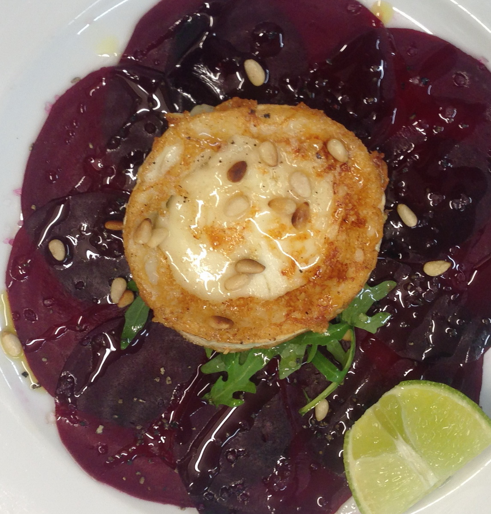
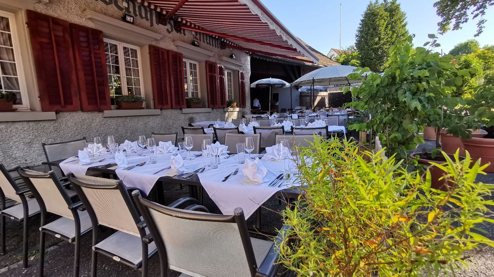
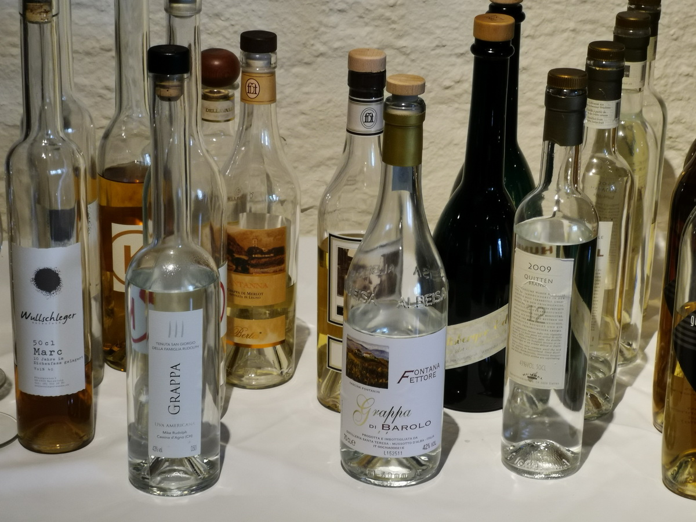
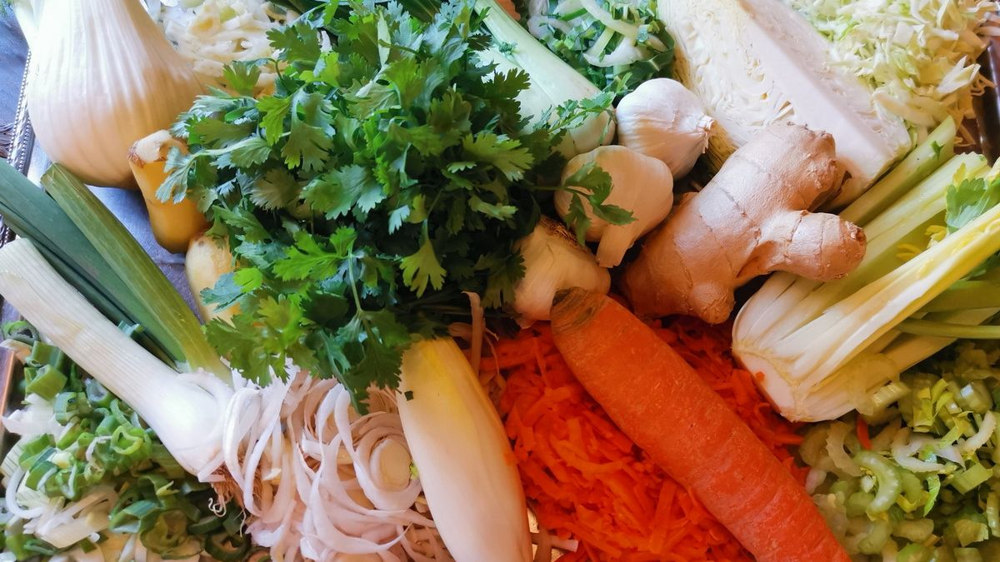
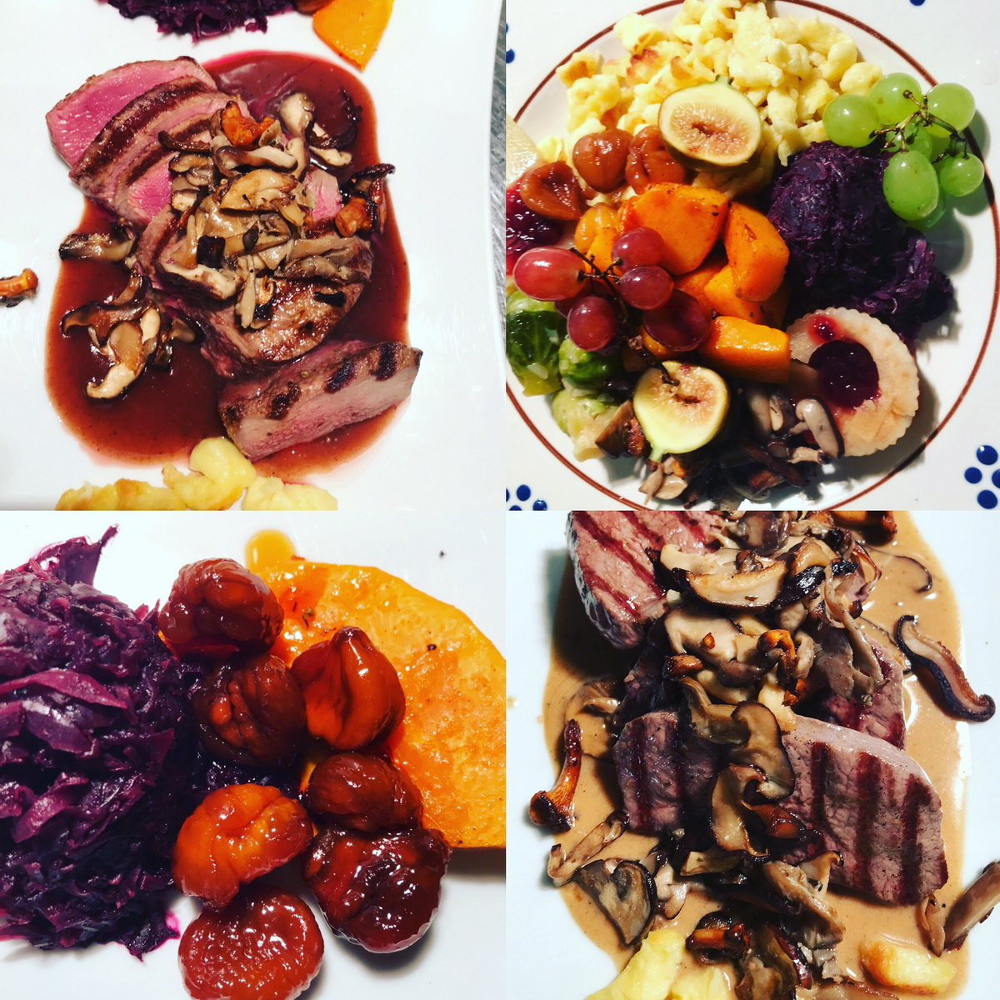
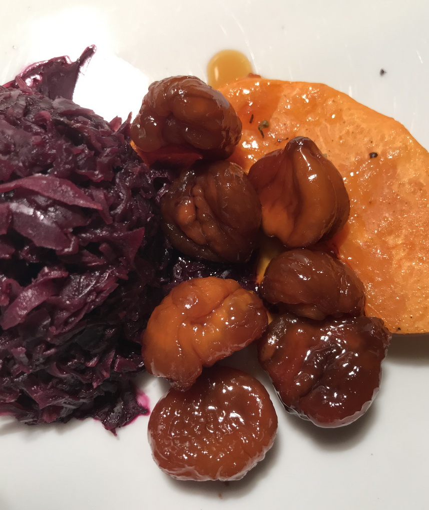
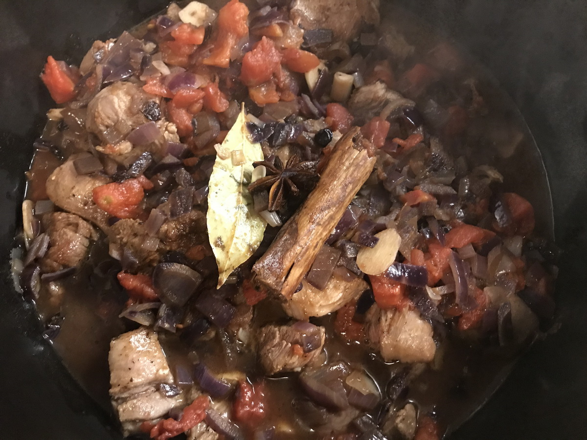
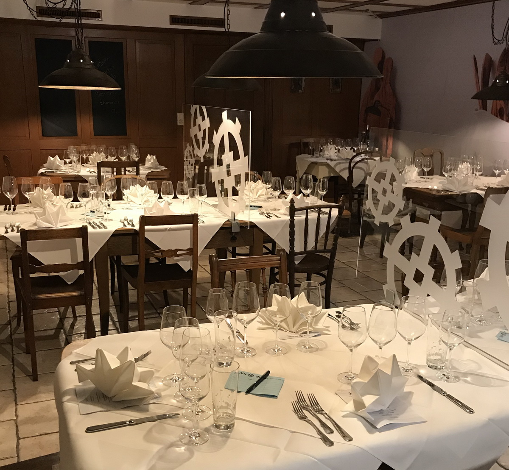
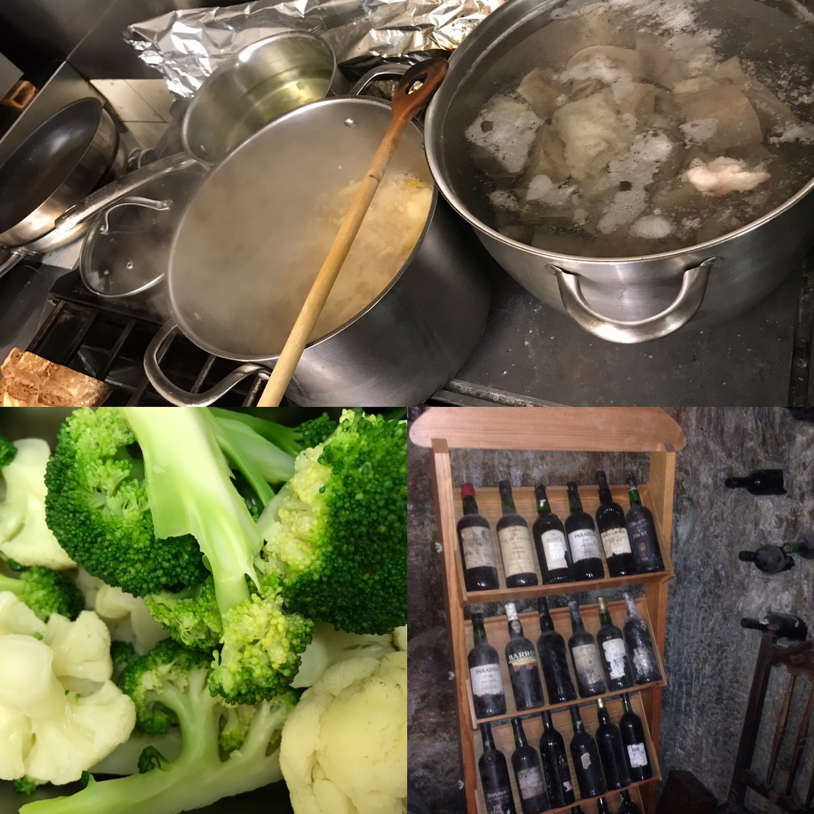
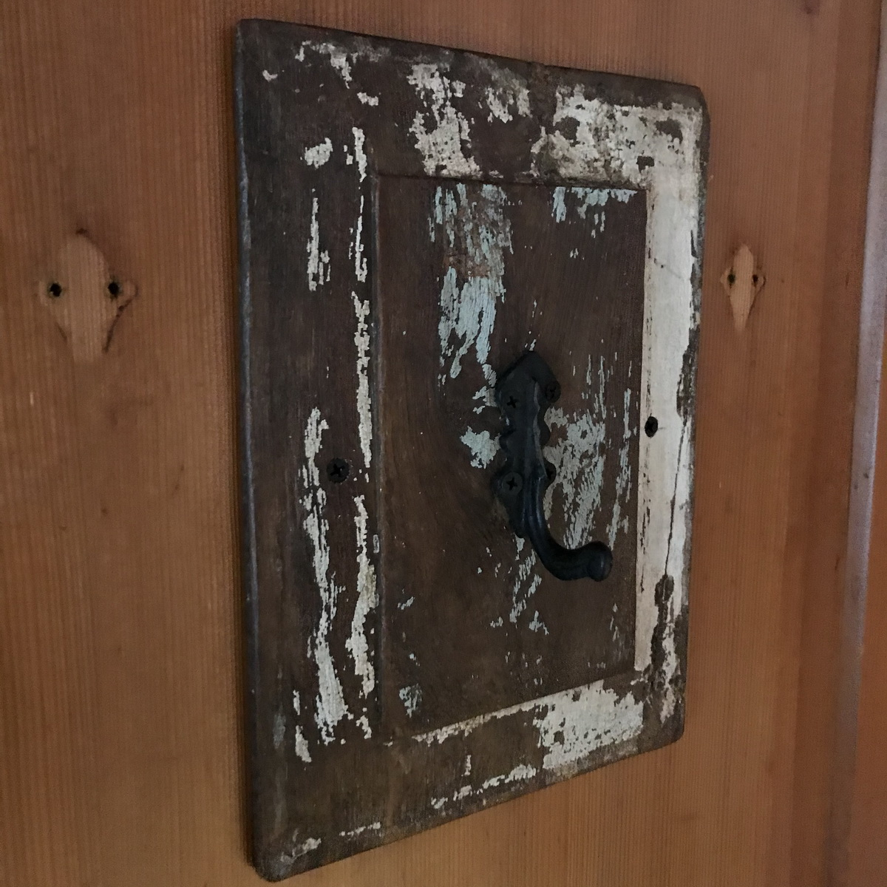

Herzlich willkommen
Restaurant Alte Mühle
Sabine Krapf, Sibylla Berchtold, Ratna Schwarz, Daniela Hotz, Severin Gross, Lorena und Urs, Nathalie & Peter Fullin freuen sich, Sie bei uns begrüssen zu dürfen.